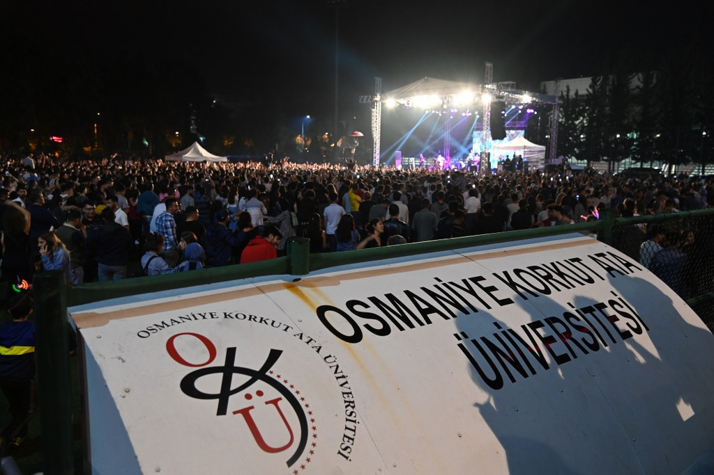

OKÜ Festival Hakkında
OKÜFEST
Osmaniye Korkut Ata Üniversitesi (OKÜ) festivalleri ve konserleri için hazırladığın web sitesinde kullanabileceğin tüm sanatçı ve tarih bilgilerini içeren kapsamlı liste aşağıdadır.
İletişim"Kampüsün enerjisine ortak ol! Osmaniye Korkut Ata Üniversitesi'ndeki tüm güncel etkinlikleri tek bir platformdan takip et, hiçbir anı kaçırma."
Osmaniye Korkut Ata Üniversitesi (OKÜ) festivalleri ve konserleri için hazırladığın web sitesinde kullanabileceğin tüm sanatçı ve tarih bilgilerini içeren kapsamlı liste aşağıdadır.
İletişim
OKÜ’nün enerjik atmosferinde binlerce öğrenciyle bir araya gel, festival coşkusunu kampüsün kalbinde yaşa.

Konserlerden DJ performanslarına, gün boyu süren etkinliklerle kampüste müziğe ve eğlenceye doy.

Sadece müzik değil; atölyeler, oyun alanları ve kulüp stantları ile festivalin her anını dolu dolu geçir.

OKÜ sahnelerinden kimler geçti? Melek Mosso’dan Sefo’ya, Sinan Akçıl’dan Haluk Levent’e dev arşivi keşfet.

days
hours
minutes
seconds